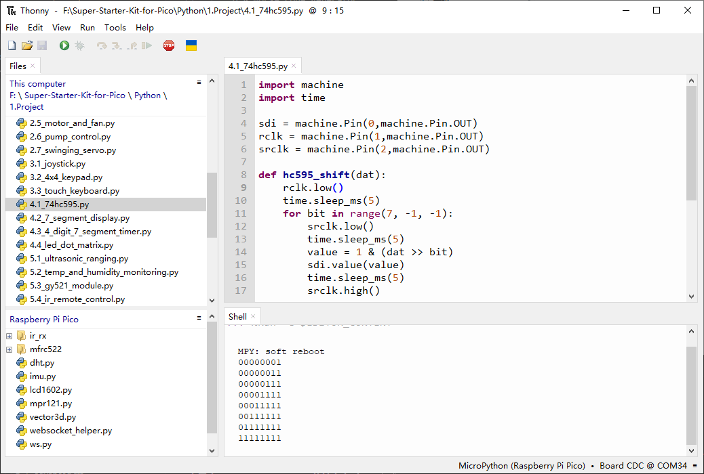
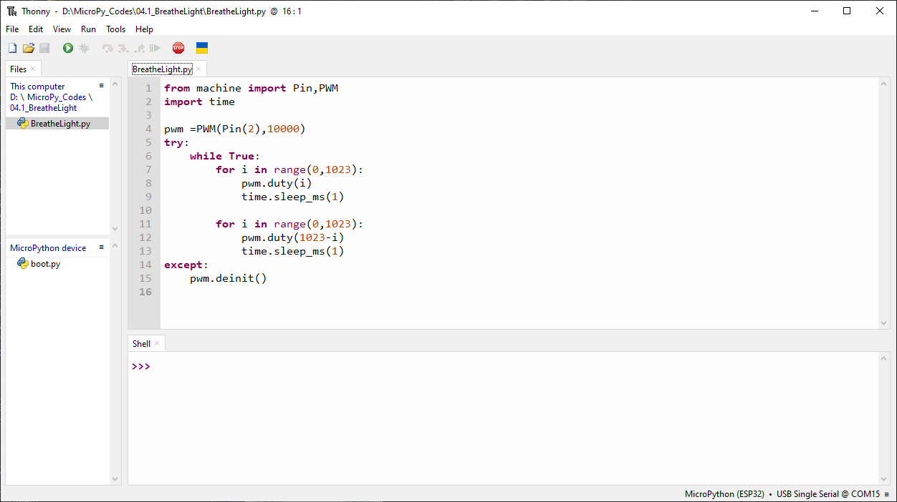
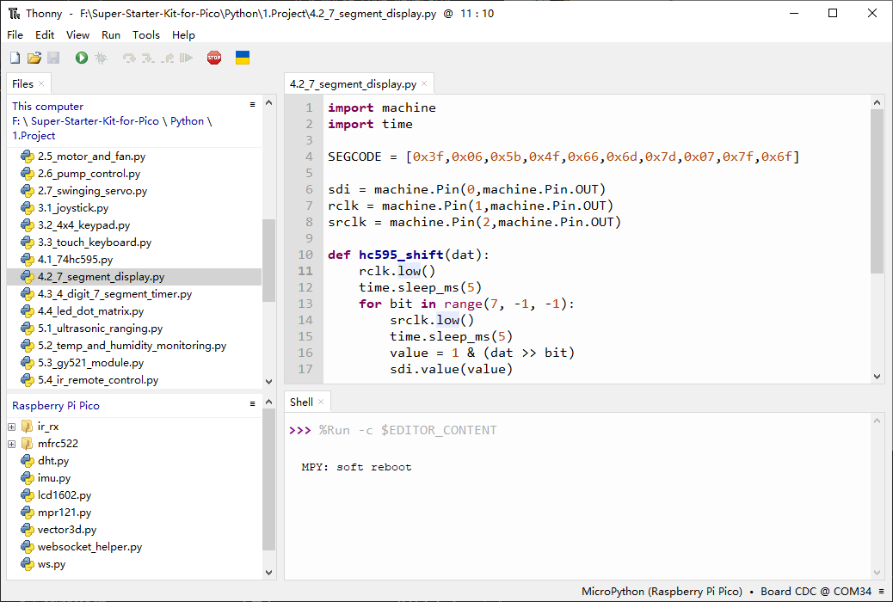
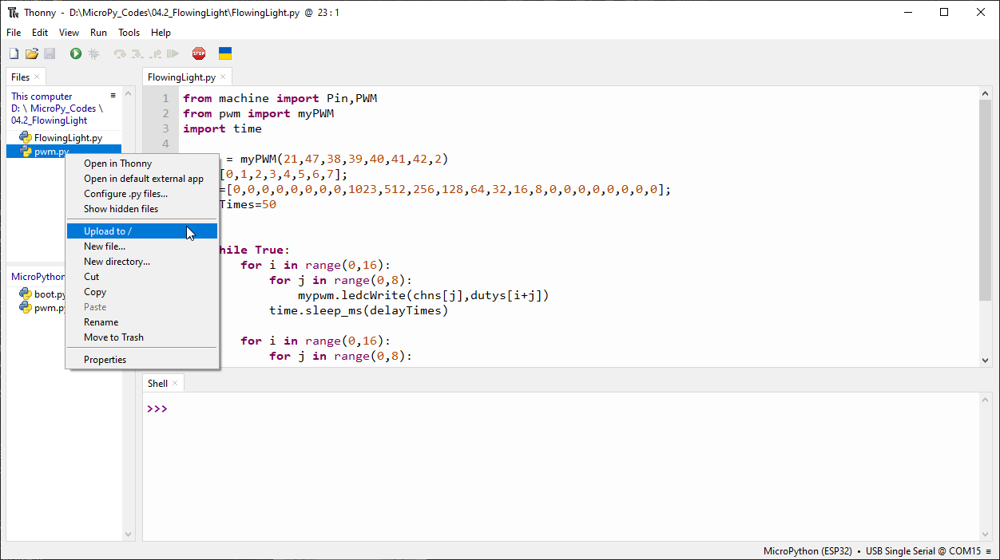

Chapter 4 Analog & PWM
In previous study, we have known that one button has two states: pressed and released, and LED has lighton/off state, then how to enter a middle state? How to output an intermediate state to let LED “semi bright”? That’s what we’re going to learn. First, let’s learn how to control the brightness of a LED.
Project 4.1 Breathing LED
Breathing light, that is, LED is turned from off to on gradually, and gradually from on to off, just like “breathing”. So, how to control the brightness of a LED? We will use PWM to achieve this target.
Component List
ESP32-S3-WROOM x1
GPIO Extension Board x1
830 Tie-Points Breadboard x1
LED x1
Resistor 220Ω x1
Jumper Wire x2
Connect
This circuit is the same as the one in engineering Blink.
Code
This project is designed to make PWM output GPIO2 with pulse width increasing from 0% to 100%, and then reducing from 100% to 0% gradually. Move the program folder “Super_Starter_Kit_for_ESP32_S3/Python/Python_Codes” to disk(D) in advance with the path of “D:/Micropython_Codes”. Open “Thonny”，click“This computer” >> “D:” >> “Micropython_Codes” >> “04.1_BreatheLight” and double click “BreatheLight.py”.
04.1_BreatheLight
Click “Run current script”, and you’ll see that LED is turned from ON to OFF and then back from OFF to ON gradually like breathing.
The following is the program code:
from machine import Pin,PWM
import time
pwm =PWM(Pin(2),10000)
try:
while True:
for i in range(0,1023):
pwm.duty(i)
time.sleep_ms(1)
for i in range(0,1023):
pwm.duty(1023-i)
time.sleep_ms(1)
except:
pwm.deinit()
Project 4.2 Meteor Flowing Light
After learning about PWM, we can use it to control LED bar graph and realize a cooler flowing light. The component list, circuit, and hardware are exactly cons istent with the project Flowing Light.
Component List
ESP32-S3-WROOM x1
GPIO Extension Board x1
830 Tie-Points Breadboard x1
LED Bar Graph x1
Resistor 220Ω x8
Jumper Wire x8
Connect
Code
Flowing Light with tail was implemented with PWM. Open “Thonny”, click “This computer” >> “D:” >> “Micropython_Codes” >> “04.2_FlowingLight”. Select “pwm.py”, right click to select “Upload to /”, wait for “pwm.py” to be uploaded to ESP32-S 3 and then double click “FlowingLight.py”.
04.2_FlowingLight
Click “Run current script”, and LED Bar Graph will gradually light up and out from left to right, then light up and out from right to left.
The following is the program code:
from machine import Pin,PWM
from pwm import myPWM
import time
mypwm = myPWM(21,47,38,39,40,41,42,2)
chns=[0,1,2,3,4,5,6,7];
dutys=[0,0,0,0,0,0,0,0,1023,512,256,128,64,32,16,8,0,0,0,0,0,0,0,0];
delayTimes=50
try:
while True:
for i in range(0,16):
for j in range(0,8):
mypwm.ledcWrite(chns[j],dutys[i+j])
time.sleep_ms(delayTimes)
for i in range(0,16):
for j in range(0,8):
mypwm.ledcWrite(chns[7-j],dutys[i+j])
time.sleep_ms(delayTimes)
except:
mypwm.deinit()